· EEM312
EEM312 Sayısal Elektronik: Final Sınavları ve Çözümleri (2007–2011)
EEM312 – Sayısal Elektronik · 04.06.2007 · 16.10.2026
Bu yazı, Başkent Üniversitesi EEM312 Sayısal Elektronik dersinin (Prof. Dr. Emin Akata) 2007–2011 yıllarına ait beş yarıyıl sonu (final) sınavını çözümleriyle bir araya getiriyor: 04.06.2007, 02.06.2008, 01.06.2009, 03.06.2010 ve 03.06.2011 (genel sınav). Sorular ve hocanın çözümleri yazıya döküldü, devre şekilleri görsel olarak eklendi; hesaplar kontrol edildi. Aynı sınavların başka klasörlerdeki kopyaları (eem312_07_final.doc, FINAL_EEM312_08_S.doc, 2007.pdf, 2008.pdf) elendi. Orijinal Word dosyaları yazının sonunda ZIP olarak indirilebilir. Önceki finaller: Final Sınavları 2003–2006; ara sınavlar: 2003–2006, 2007–2010.
2007 – Yarıyıl sonu sınavı (04.06.2007)
Soru 1 (25p, her şık 5p)
a) Kısa devre (direct path) kaybı ile C_L ilişkisi: büyük C_L'de çıkış yavaş değiştiğinden girdi yükselirken PMOS hızla kesime gider ve I_sc ≈ 0 olur; küçük C_L'de PMOS girdinin yükseliş süresinin büyük kısmında iletimde kalır ve en büyük I_sc akar. Kaybı azaltmak için C_L'nin büyük olmasında yarar vardır.
b) Boşlukları doldurunuz (yanıtlar koyu):
- Moore kuralına göre IC içindeki MOSFET sayısı her 14–18 ayda iki katına çıkmaktadır.
- "Hot-carrier" etkisi eşik geriliminin genliğinde artışa neden olur.
- Eşik geriliminin azaltılması, başarımı ve statik güç tüketimini artırır.
- CMOS tersleyicide PMOS genişliği büyütülürse VTC'de geçiş bölgesi sağa doğru kayar.
- CMOS üretim sürecinde die alanı artarsa yield düşer.
c) PUN ve PDN niçin sırasıyla PMOS ve NMOS'tan oluşur?
PUN'da NMOS olsaydı, V_in = V_DD iken C_L NMOS üzerinden dolarken NMOS'un source'u V_out olur; V_out = V_DD − V_Tn'ye ulaşınca V_GS = V_Tn olur ve NMOS kesime gider. Benzer şekilde PDN'de PMOS olsaydı V_in = 0 iken C_L boşalırken V_out = |V_Tp|'ye düşünce PMOS kesime gider ve çıkış toprağa inemez. Böylece "rail-to-rail" salınım elde edilemez. PUN'da PMOS, PDN'de NMOS kullanıldığında rail-to-rail salınım sağlanır.
d) CMOS inverterde V_M noktasında transistörler hangi durumdadır?
V_M tanım gereği V_in = V_out noktasıdır. I_DSp = −I_DSn; V_GSn = V_in, V_GSp = V_in − V_DD; V_DSn = V_out, V_DSp = V_out − V_DD olduğundan her iki transistörde de V_DS = V_GS yazılabilir. Bu da V_DSn ≥ V_GSn − V_Tn ve V_DSp ≤ V_GSp − V_Tp doyum koşullarının sağlandığını gösterir: V_M'de her iki transistör de doyumdadır.
e) PMOS/NMOS = 2 iken 2 girişli CMOS NOR'un mantıksal eforu: iki seri PMOS'un 4 kat büyütülmesi gerekir; her giriş 1 + 4 = 5 C_unit görür. İnverter girişi 1 + 2 = 3 C_unit gördüğünden g = 5/3.
Soru 2 (10p): Çalışma bölgeleri
V_T = 0,4 V, V_DSAT = 1 V:
| V_GS | V_DS | Durum |
|---|---|---|
| 0,3 V | 3 V | V_GS < V_T, kanal oluşmaz: OFF |
| 0,8 V | 2 V | V_DS > V_DSAT > V_GS − V_T = 0,4 V: SAT |
| 1 V | 0,8 V | V_DSAT > V_DS > V_GS − V_T = 0,6 V: SAT |
| 2 V | 0,5 V | V_GS − V_T = 1,6 V > V_DSAT > V_DS: LIN |
Soru 3 (20p): Complementary CMOS geçit
L_n = L_p; W_n = 1 µm için R_n = 10 kΩ, W_p = 1 µm için R_p = 30 kΩ, C_L = 1 pF.
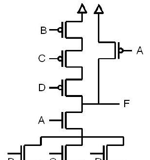
- a) F = [A(B + C + D)]′
- b) En kötü gecikme en büyük eşdeğer dirençli yoldan: PUN için D–C–B, PDN için A–B (ya da C ya da D). t_pLH,max = 0,69(3R_p)C_L = 62,1 ns, t_pHL,max = 0,69(2R_n)C_L = 13,8 ns.
- c) t_pLH = t_pHL için R_PUN = R_PDN: B, C, D PMOS çarpanı X, NMOS çarpanı Y ise 3R_p/X = 90/X ve 2R_n/Y = 20/Y ⇒ X = 9Y/2. W_n (A, B, C, D) = 2 µm seçilirse W_p (B, C, D) = 9 µm. A PMOS'u tek başına R_pA = R_PDN = 10 kΩ verirse yeter: W_pA = (1 µm)(30 kΩ/10 kΩ) = 3 µm.
- d) En uzun t_pLH: en büyük dirençli PUN yolu (B, C, D) ve dolacak iç düğüm sığalarının boş olması gerekir. A = 1 olmalı; D–C ve C–B arasındaki düğümlerin boş olması için çıkış 0 iken D = 0 ve C = 0 olmalı. A = 1, C = 0, D = 0 iken B'nin 1→0 geçişi en kötü gecikmeyi verir.
Soru 4 (15p): NOR geçidinde olasılık ve güç
- a) Girişler eşit olasılıklıyken 3 girişli NOR için P(F = 1) = 1/2³ = 0,125.
- b) Her girişin 0 olma olasılığı 0,1 ise P(F = 1) = 0,1³ = 0,001; P(F: 0→1) = (1 − 0,001)(0,001) = 0,999×10⁻³ ≈ 0,001.
- c) V_DD = 2 V, C_L = 1 nF, f = 1 GHz: P_d = V_DD² C_L f P₀→₁ = 4 × 10⁻⁹ × 10⁹ × 10⁻³ = 4 mW.
Soru 5 (10p): Pass transistör mantığıyla 3 girişli AND
- a) Dört NMOS ile (girişlerin tersleri kullanılabilir): A girişi, kapıları B ve C olan seri iki transistör üzerinden F'ye aktarılır; kapıları C′ ve B′ olan iki transistör ise F'yi 0'a bağlar.
- b) V_Tn = 0,6 V, V_DD = 3 V: threshold drop nedeniyle V_OH = V_DD − V_Tn = 2,4 V, V_OL = 0 V, V_swing = 2,4 V.
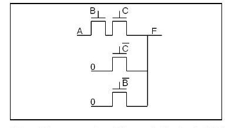
Soru 6 (20p): Tersleyici zinciri
C_L = 10⁵ C_g yükü f = 5 ile sürülecek; ilk tersleyicide W_p = 4 µm, W_n = 2 µm, t_p0 = 0,2 ns, γ = 1.
- a) f = F^(1/N) = 10^(5/N) = 5 ⇒ N = 5/log 5 = 7,15 ⇒ N = 7.
- b) t_p = Nt_p0(1 + f/γ) = 7 × 0,2 ns × 6 = 8,4 ns.
- c) 5. tersleyici birinciden f⁴ = 625 kat büyük: W_n5 = 1250 µm, W_p5 = 2500 µm.
Puanlar: S1 25p, S2 10p, S3 20p, S4 15p, S5 10p, S6 20p.
2008 – Yarıyıl sonu sınavı (02.06.2008)
Soru 1 (25p, her şık 5p)
a) W_p artırılırsa V_M nasıl değişir? W_p arttıkça PMOS direnci düşer; R_p ve R_n'den oluşan gerilim bölücünün çıkışı V_DD'ye yaklaşır ve PMOS'un sürme gücü artar: V_M, V_DD'ye yaklaşır.
b) I_D–V_GS bağıntısı doyumda karesel ("üssel"), hız doyumunda niçin doğrusal? Doğrusal bölgede I_D = k′(W/L)[(V_GS − V_T)V_DS − V_DS²/2](1 + λV_DS). V_DS, V_DSAT'a ulaştığında hız doyumu başlar ve o andaki akım artan V_DS'de sabit kalır; bu ifadede V_DS = V_DSAT konunca I_D, V_GS ile doğrusal değişir. Doyum ise V_DS = V_GS − V_T'de başlar ve I_D = (k′/2)(W/L)(V_GS − V_T)²(1 + λV_DS) olur; burada bağıntı kareseldir.
c) Pass transistör mantığının temel sorunu ve transmission gate çözümü:
NMOS pass transistörde V_GS, V_DD − V_T'ye ulaşınca transistör kesime gider; çıkış V_DD'ye yükselemez ve "zayıf 1" iletilir. V_BS de büyüdüğünden body effect V_T'yi artırır ve çıkış daha da düşük kalır. Transmission gate, NMOS'a paralel bir PMOS ekler: C = 1 iken ikisi de iletir. "1" iletilirken NMOS V_DD − V_T'de kesime gider ama PMOS sığacı V_DD'ye kadar doldurmaya devam eder; "0" iletilirken PMOS V_T'de kesime gider ama NMOS sığacı 0'a kadar boşaltır.
d) V_DD, V_T ve W/L ile güç–başarım optimizasyonu:
- V_T ↓ → başarım ↑, statik güç ↑
- V_DD ↓ → başarım ↓, dinamik güç ↓↓ (karesel)
- W/L ↑ → başarım ↑, dinamik güç ↑
V_DD'yi azaltmak dinamik gücü karesiyle düşürür ama başarım da düşer; V_DD ≈ 2V_T'ye inildiğinde düşüş kabul edilemez olur. Bu yüzden V_T de azaltılır, ama bu kez statik güç artar. Kaybedilen başarımı geri kazanmanın bir yolu W/L'yi büyütmektir; bu da C_L'yi artırdığından bir noktadan sonra "self loading" olur ve yüzey boşuna büyür.
e) PMOS/NMOS = 3 iken 2 girişli NAND'ın mantıksal eforu: inverterde giriş 3 + 1 = 4 C_unit görür (g = 1). NAND'da PMOS'lar 3, seri NMOS'lar 2 boyutlu olduğundan her giriş 5 C_unit görür: g = 5/4.
Soru 2 (20p): Body effect
V_T0 = 0,5 V, k′ = 8,5×10⁻⁵ A/V², 2φ_F = −0,74 V, γ = 0,48 V^½, λ = 0,01 V⁻¹.
a) V_G = 2,8 V, V_D = 5 V, V_S = 1 V, V_B = 0 V, I_D = 0,425 A ölçülüyor; W/L?
- V_SB = 1 V: V_T = 0,5 + 0,48(√1,74 − √0,74) = 0,72 V
- V_GS = 1,8 V, V_DS = 4 V > V_GS − V_T = 1,08 V ⇒ doyum
- W/L = 2I_D / [k′(V_GS − V_T)²(1 + λV_DS)] = 2 × 0,425 / (8,5×10⁻⁵ × 1,17 × 1,04) = 8218
b) V_G = 5 V, V_D = 4 V, V_S = 2 V, V_B = 1 V: V_SB yine 1 V, V_T = 0,72 V. V_GS = 3 V, V_DS = 2 V < V_GS − V_T = 2,28 V ⇒ doğrusal bölge.
- I_D = k′(W/L)[(V_GS − V_T)V_DS − V_DS²/2](1 + λV_DS) = 8,5×10⁻⁵ × 8218 × [2,28×2 − 4/2] × 1,02 = 1,82 A
Soru 3 (15p): Logical effort
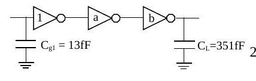
- a) F = C_L/C_g1 = 351/13 = 27. Tamponsuz gecikme t_p0(1 + F/γ) = 28 t_p0. N = 3 için t_p = 3t_p0(1 + ∛27) = 12 t_p0, f = 3; a = f = 3, b = f² = 9.
- b) Ortadaki inverter yerine 2 girişli NAND (PMOS/NMOS = 2): g₁ = g₃ = 1, g₂ = 4/3; G = 4/3, H = 27 × 4/3 = 36, h = ∛36 = 3,3. f₁ = 3,3, f₂ = 2,475, f₃ = 3,3; a = s₂ = f₁g₁/g₂ = 2,475, b = s₃ = f₁f₂g₁/g₃ = 8,17.
Soru 4 (20p)
a) X = [(A′ + B′)(C′ + D′ + E′) + F′]G′ = [(AB + CDE)F + G]′ işlevini, (W/L)_NMOS = 2, (W/L)_PMOS = 6 inverterle en kötü koşulda aynı akımı basacak biçimde tasarlayınız.
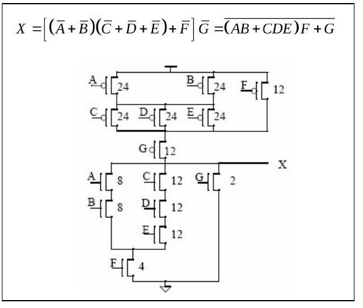
NMOS yolları: 1/8 + 1/8 + 1/4 = 1/2 ve 3/12 + 1/4 = 1/2 (inverterin 1/2'si); G tek başına 2. PMOS yolları: 1/24 + 1/24 + 1/12 = 1/6 ve 1/12 + 1/12 = 1/6.
b) Y = AB + C için pass transistör devresi ve CPL (differential) eklentisi (gereğinden fazla transistör kullanmadan, değillenmiş girdilerle):
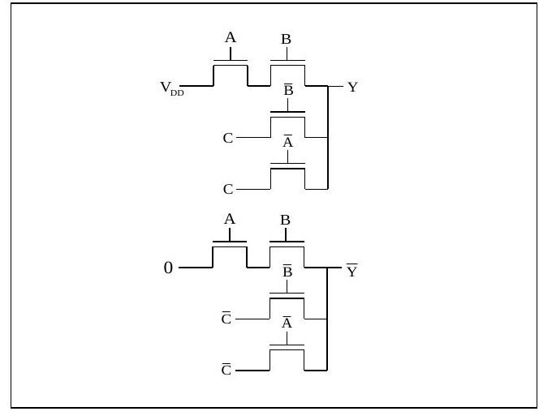
Soru 5 (20p): Reconvergent fanout ve enerji
P_A = P_S = P_B = 0,5; C = 1 fF, V_DD = 3 V, f = 2 GHz (S'ye bağlı inverter çıkışındaki güç ihmal).
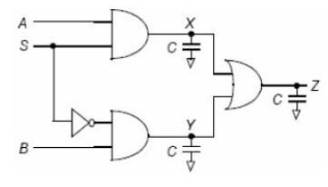
- P_X = P_A P_S = 0,25; P_X,0→1 = (1 − 0,25)(0,25) = 0,1875. P_S′ de 0,5 olduğundan P_Y ve P_X aynıdır.
- S ve S′ "reconvergent fanout" yaratır; Z için doğruluk çizelgesinden P_Z = 0,5, P_Z,0→1 = 0,25.
| A | S | B | S′ | Z |
|---|---|---|---|---|
| 0 | 0 | 0 | 1 | 0 |
| 0 | 0 | 1 | 1 | 1 |
| 0 | 1 | 0 | 0 | 0 |
| 0 | 1 | 1 | 0 | 0 |
| 1 | 0 | 0 | 1 | 0 |
| 1 | 0 | 1 | 1 | 1 |
| 1 | 1 | 0 | 0 | 1 |
| 1 | 1 | 1 | 0 | 1 |
- X (ve Y) düğümü: CV_DD²P_X,0→1 f = 10⁻¹⁵ × 9 × 0,1875 × 2×10⁹ = 3,375 µW
- Z düğümü: 10⁻¹⁵ × 9 × 0,25 × 2×10⁹ = 4,5 µW
- Toplam güç 3,375 + 3,375 + 4,5 = 11,25 µW; enerji = güç/f = 5,6 fJ
Puanlar: S1 25p, S2 20p, S3 15p, S4 20p, S5 20p; süre 100 dakika.
2009 – Yarıyıl sonu sınavı (01.06.2009)
Soru 1 (30p, her şık 5p)
a) V_M'yi toprağa yaklaştırmak için W_p/W_n nasıl değişmeli? V_M'de iki transistör de doyumdadır; R_p ve R_n bir gerilim bölücü oluşturur, PMOS V_M'yi yukarı, NMOS toprağa çeker. NMOS'un çıkışı toprağa çekebilmesi için R_n küçülmeli, yani W_p/W_n oranı küçülmelidir.
b) Oranlı (ratioed) ve oransız (ratioless) mantık: CMOS'ta çıkış R_n ve R_p'den bağımsız olarak V_DD ile toprak arasında salınır; bu yüzden "ratioless" denir. Dirençli yüklü (R_L) ratioed yapıda V_OH V_DD'ye çıkabilir ama V_OL = [R_PDN/(R_PDN + R_L)]V_DD olduğundan hiçbir zaman 0 V olamaz, dirençlerin oranına bağlı kalır. Bu asimetrik tepki ve statik güç tüketimi doğurur; buna karşın transistör sayısı yarı yarıya azalır.
c) Kısa devre kaybı ve C_L: V_out PMOS'un drain'idir. Büyük C_L'de girdi yükselirken (V_GS = V_DD) PMOS'un V_DS'si yaklaşık 0 V olduğundan I_sc ≈ 0; küçük C_L'de sığaç hızla boşalır, girdinin uzun yükselişi boyunca PMOS'un V_DS'si yaklaşık V_DD olur ve I_sc akar. Kaybı azaltmak için C_L'nin büyük olması yararlıdır.
d) Kanal sığası ölçümünde C_GCS = 0 bulunması neyi gösterir? Transistör kesimdeyken kanal oluşmadığından tüm sığa (WLC_ox) gate ile body arasında görünür. Kanal oluşunca kanal ekran görevi yapar; gate-body sığası sıfırlanır ve sığa gate-drain ile gate-source olarak görünür. C_GCS'nin sıfır olduğu tek durum kesim (cut-off) durumudur.
e) "Glitching": bir geçide tüm girdiler aynı anda gelmiyorsa çıkış, girdiler kararlı olana dek olması gerekenden farklı bir seviyede bulunabilir ve geçici salınımlar yapabilir. Örneğin F₁ → F₂ → F₃ zincirinde F₃'e bir sinyal doğrudan, diğeri gecikerek ulaşır. Glitching gecikmeyi ve güç kaybını artırır; işlevi değiştirmeden sinyallerin geçitlere aynı anda ulaşmasını sağlayan mantık değişiklikleri (ör. zinciri dengeli ağaca çevirmek) yarar sağlar.
f) Transmission gate'in pass transistöre katkısı: pass transistörün en önemli sorunu NMOS'tan oluşmasından kaynaklanan, "1" iletimindeki threshold drop kaybıdır. Transmission gate'te bir NMOS ve bir PMOS paralel bağlıdır; "1"i PMOS, "0"ı NMOS iletir (sığa PMOS üzerinden dolar, NMOS üzerinden boşalır) ve threshold drop önlenir.
Soru 2 (20p): Çalışma bölgeleri
NMOS: V_T = 0,3 V, V_DSAT = 0,3 V, k′ = 100 µA/V²; PMOS: V_T = −0,3 V, V_DSAT = −0,5 V, k′ = −50 µA/V² (λ = 0, γ = 0).
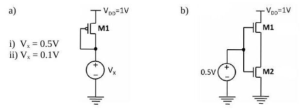
- a) V_x = 0,5 V: |V_GS| = 0,5 V, |V_GS| − |V_T| = 0,2 V < |V_DSAT|, |V_DS| = 0,5 V > 0,2 V ⇒ doyum. V_x = 0,1 V: |V_GS| = 0,9 V, |V_GS| − |V_T| = 0,6 V > |V_DSAT|, |V_DS| = 0,9 V > |V_DSAT| ⇒ hız doyumu.
- b) M1'in source'u (M2'nin drain'i) V_y olsun; V_y < 0,2 V olmalı (yoksa M1 kesimde olurdu). M2: V_GS − V_T = 0,2 V < V_DSAT ve V_DS = V_y < 0,2 V ⇒ M2 doğrusal bölgede. M1: V_DS = 1 − V_y > 0,8 V, 0 < V_GS − V_T < 0,2 V < V_DSAT ⇒ M1 doyumda.
Soru 3 (20p)
a–b) X = (E′ + F′)[A′ + (B′ + C′)D′] işlevini (değillenmiş girdi yok) CMOS olarak tasarlayıp W_n/W_p = 1/2 olan en küçük inverterle aynı akımı basacak biçimde boyutlandırınız. De Morgan ile X′ = EF + A(BC + D), dolayısıyla V_out = X tek kademede elde edilir.
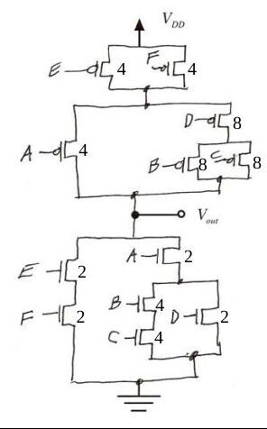
c) Aşağıdaki devrenin çıktı işlevi:
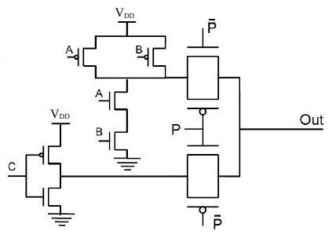
C girişinde bir inverter, A ve B'de bir NAND ve çıkışa bağlı iki transmission gate var; P = 1 iken C′, P = 0 iken (AB)′ çıkışa aktarılır: Out = C′P + (AB)′P′.
Soru 4 (30p): Logical effort ve güç
Girdilerdeki inverterler minimum boyutlu (giriş sığası 1 fF), C_L = 25 fF.
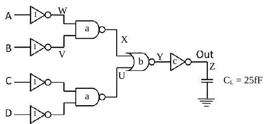
a) g₁ = g₄ = 1, g₂ = 4/3 (NAND2), g₃ = 5/3 (NOR2); G = 20/9, B = 1, F = 25, H = 55,56, h = ⁴√H = 2,73.
- f₁ = 2,73, f₂ = 2,05 ≈ 2, f₃ = 1,64 ≈ 1,6, f₄ = 2,73
- a = f₁g₁/g₂ = 2, b = f₁f₂g₁/g₃ = 3,3, c = f₁f₂f₃g₁/g₄ = 8,7
- Çözümde en küçük gecikme D = t_p0[Σp_j + N·H^(1/N)/γ] = t_p0[(1×2×1×2) + 4×2,73] = 14,9 t_p0 bulunuyor.
Not: Çözümde parazitik gecikmeler toplanacakken çarpılmış. p_inv = 1, p_NAND2 = p_NOR2 = 2 için Σp = 1 + 2 + 2 + 1 = 6'dır; doğrusu D = (6 + 4 × 2,73)t_p0 ≈ 16,9 t_p0 olur.
b) P_A = P_C = 0,5, P_B = P_D = 0,2, V_DD = 2,5 V, f = 1 GHz için Out'taki dinamik güç:
- P_W = 0,5, P_V = 0,8, P_X = 1 − P_W P_V = 0,6, P_U = P_X
- P_Y = (1 − P_X)(1 − P_U) = 0,16, P_Z = 0,84; P_Z,0→1 = 0,16 × 0,84 = 0,1344
- P_dyn = 25×10⁻¹⁵ × 6,25 × 0,1344 × 10⁹ = 21 µW
Puanlar: S1 30p, S2 20p, S3 20p, S4 30p; süre 100 dakika.
2010 – Yarıyıl sonu sınavı (03.06.2010)
Soru 1 (25p)
- a) V_DD, V_T ve W/L ile güç–başarım optimizasyonu — yanıt 2008 Soru 1d ile aynı.
- b) Kısa devre kaybı ve C_L — yanıt 2009 Soru 1c ile aynı: C_L'nin büyük olması yararlı.
- c) PUN/PDN'nin PMOS/NMOS olması — yanıt 2007 Soru 1c ile aynı (rail-to-rail salınım).
- d) Kritik sinyal ve transistör sıralaması: girdiler arasında kararlı duruma en son geçen sinyal kritik sinyaldir; çıkışa en yakın transistöre bağlanması başarımı artırır (o beklenirken alttaki iç düğüm sığaları boşalabilir).
e) Gate'i V_DD'de olan NMOS pass transistör, V_DD = 1,2 V, V_T = 0,4 V, body effect yok:
- V_in = 0 V: giriş ucu source olur, V_GS = V_DD; transistör "güçlü 0" iletir: V_out = 0 V.
- V_in = 0,6 V: V_DD − V_in = 0,6 V > V_T, transistör iletir ve giriş aynen aktarılır: V_out = 0,6 V.
- V_in = 0,9 V: V_DD − V_in = 0,3 V < V_T; giriş drain, çıkış source olur, "zayıf 1" iletilir ve çıkış V_DD − V_T'ye kadar yükselir: V_out = 0,8 V.
- V_in = 1,2 V: aynı gerekçeyle V_out = 0,8 V.
Soru 2 (15p): f(a, b, c) = c(ab + a′b′)
NMOS/PMOS oranı 1/2 olan inverterle aynı direnci gösterecek CMOS devre (değillenmiş girişler kullanılabilir). PDN f′ = c′ + [(a′ + b′)(a + b)]'yi gerçekler, PUN bunun dualidir. W = 1 alınırsa c′ NMOS'u büyütülmez; diğerleri şekildeki gibi boyutlandırılır (seri NMOS çiftleri 2W, seri üç PMOS 6W).
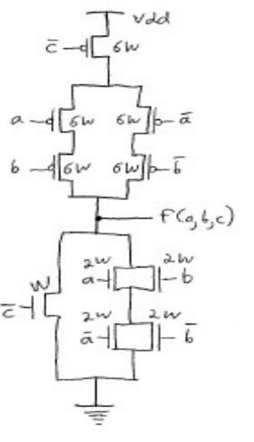
Soru 3 (15p): PMOS devresinde V_out
K_p = 1 mA/V², λ_p = 0, V_Tp = −1 V; source 5 V'ta, gate 1 V'ta, drain 2 kΩ ile toprağa bağlı.
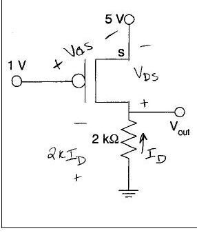
V_GS = −4 V, devre kesimde değil. Doyum varsayılırsa I_D = −½K(V_GS − V_T)² = −4,5 mA ve 2000I_D + V_DS + 5 = 0'dan V_DS = +4 V çıkar; PMOS için V_DS pozitif olamaz, transistör doğrusal bölgededir. I_D = (3 + V_DS/2)V_DS ve I_D = −(5 + V_DS)/2000 birlikte çözülünce V_DS = −6,19 V (olanaksız) ya da V_DS = −0,81 V; V_out = 5 − 0,81 = 4,19 V.
Soru 4 (15p): Toplam dinamik güç
V_DD = 2,5 V, f = 1 GHz, P_A=1 = 0,5, P_B=1 = 0,4, P_C=1 = 0,7.
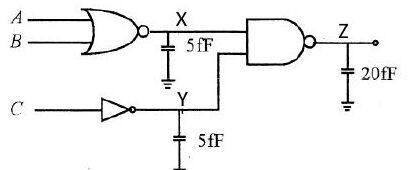
- P_X = (1 − P_A)(1 − P_B) = 0,3, P_X,0→1 = 0,7 × 0,3 = 0,21; P_dyn,X = 0,21 × 10⁹ × 5×10⁻¹⁵ × 2,5² = 6,6 µW
- P_Y = 1 − P_C = 0,3, P_Y,0→1 = 0,21 ⇒ P_dyn,Y = 6,6 µW
- P_Z = 1 − P_X P_Y = 0,91, P_Z,0→1 = 0,09 × 0,91 = 0,0819; P_dyn,Z = 0,0819 × 10⁹ × 20×10⁻¹⁵ × 2,5² = 10,2 µW
- Toplam 23,4 µW
Soru 5 (30p)
2006 finalinin 3a ve 3b sorularının aynısıdır: C_inv'den 1200 C_inv yükü süren zincirde 4 inverterle t_p = 27,54 t_p0, en iyisi N = 6 ile 25,56 t_p0 (boyutlar 1; 3,26; 10,63; 34,6; 112,9; 368,2); NAND (2 fF) – inverter – NOR (200 fF) zincirinde h ≈ 6, s₁ = 1,5, s₂ = 9, s₃ = 32,4. Ayrıntılı çözüm için 2006 finali.
Puanlar: S1 25p, S2 15p, S3 15p, S4 15p, S5a 15p, S5b 15p; süre 100 dakika.
2011 – Genel sınav (03.06.2011)
Soru 1 (30p)
a) CPL yapısında 2 girişli XOR/XNOR: iki ayrı pass transistör ağı vardır; biri F'yi, diğeri F′'yi üretir. Örneğin en üstteki transistör A'yı B = 0 (B′ = 1) iken çıkışa iletir ve XOR'un AB′ terimini oluşturur.
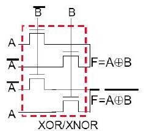
b) DCVSL: çıkışta işlevin kendisi ve değili birlikte elde edilir (differential); girişlerde tüm değişkenler ve değilleri bulunur. Pull-down ağı biri Out'u, diğeri Out′'yu oluşturan iki bloktan (PDN1, PDN2), pull-up ağı ise her biri bir çıkışa bağlı, çapraz bağlanmış iki PMOS'tan oluşur. İlgili PDN bloğu "on" iken karşı PMOS "off", "off" iken "on" olur; böylece CMOS'a benzer bir pull-up/pull-down işleyişi sağlanır.
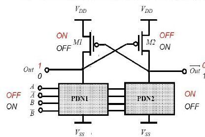
c) Tüm girdilerin 1 olma olasılığı %50; dinamik gücü daha az olan bir çözüm önerip sayısal olarak kanıtlayınız (glitch yok).
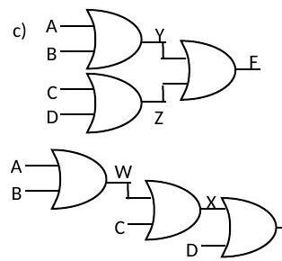
- Ağaç yapı: P_Y=0 = 0,5 × 0,5 = 0,25, P_Y=1 = 0,75, P_Y,0→1 = 0,1875; Z için de aynı. Toplam: 0,375 + P_F,0→1.
- Zincir yapı: W için 0,1875; P_X=0 = (1 − 0,75)(1 − 0,5) = 0,125, P_X,0→1 = 0,125 × 0,875 = 0,109. Toplam: 0,297 + P_F,0→1 (P_F iki yapıda aynı).
- 0,297 < 0,375 olduğundan önerilen zincir yapının dinamik güç tüketimi daha azdır.
d) 2 girişli NAND'da (A çıkışa yakın transistör) üç girdi örüntüsü:
- A = 1, B = 0→1: pull-up tek transistör; C_int ve C_L boşalmalı.
- A = 0→1, B = 1: pull-up tek transistör; C_int zaten boş, yalnız C_L boşalmalı — en iyi gecikme.
- A = B = 0→1: pull-up'taki iki transistör de "off" edilmeli; C_int ve C_L boşalmalı — en kötü gecikme.
e) "Threshold drop": rail-to-rail salınım için C_L'nin toprağa kadar boşalması ve V_DD'ye kadar dolması gerekir. NMOS C_L'yi ancak V_DD − V_Tn'ye kadar doldurabilir (b), PMOS ise ancak |V_Tp|'ye kadar boşaltabilir (d). Transistörün C_L'ye bağlı ucu source olduğunda, sığaç dolup boşaldıkça değişen V_GS kritik V_T'nin altına düşer, transistör kesime gider ve yolu tıkar.
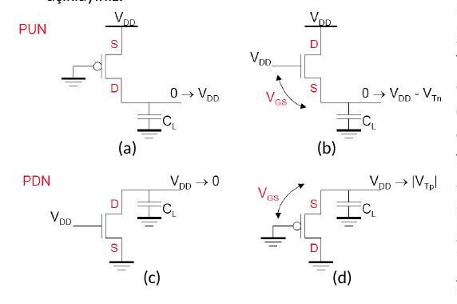
f) Gate'i 0 V'ta PMOS pass transistör, V_DD = 1,8 V, |V_T| = 0,5 V, çıkış sığası her seferinde 0,9 V'ta dolu:
- V_in = 1,8 V: giriş source olur, V_GS = 1,8 V sabit: V_out = 1,8 V.
- V_in = 0,6 V > |V_T|: aynı gerekçeyle V_out = 0,6 V.
- V_in = 0,4 V < |V_T|: giriş drain olur, threshold drop nedeniyle V_out = 0,5 V.
- V_in = 0 V: aynı nedenle V_out = 0,5 V.
Soru 2a (10p): Gecikme–fan-out grafiği
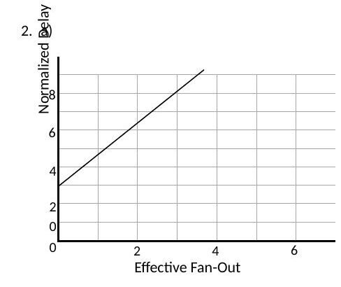
d = h + p, h = gf; doğru d = fg + p'dir. Doğrunun dikey ekseni kestiği nokta p = 3 (intrinsic delay). d = 8 olduğuna göre h = 8 − 3 = 5 (effort delay); eğim g = 5/3 (logical effort); d = 8'e karşılık gelen yatay konum f = 3 (effective fan-out). n girişli NAND için p = n olduğundan geçit 3 girişlidir.
Soru 2b (15p): Toplam dinamik güç
V_DD = 2 V, f = 1 GHz, P_A=1 = 0,3, P_B=1 = 0,6, P_C=1 = 0,4; C_L1 = 10 fF, C_L2 = 5 fF, C_L3 = 20 fF.
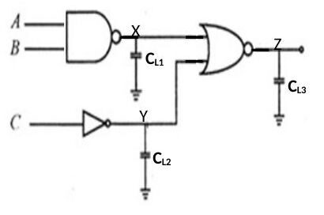
- P_X=0 = P_A P_B = 0,18, P_X=1 = 0,82, P_X,0→1 = 0,148
- P_Y=0 = P_C=1 = 0,4, P_Y=1 = 0,6, P_Y,0→1 = 0,24
- P_Z=1 = P_X=0 P_Y=0 = 0,072, P_Z=0 = 0,928, P_Z,0→1 = 0,067
- P_dyn = (10×10⁻¹⁵ × 4 × 0,148 × 10⁹) + (5×10⁻¹⁵ × 4 × 0,24 × 10⁹) + (20×10⁻¹⁵ × 4 × 0,067 × 10⁹) = 16,08 µW
Soru 3 (25p): Halka osilatör
Her inverterin gecikmesi ve salınım frekansı; yalnız gate sığaları (WLC_ox) ve çıkıştaki 5 pF dikkate alınacak; transistörler hız doyumunda ve rail-to-rail salınım varsayılacak.
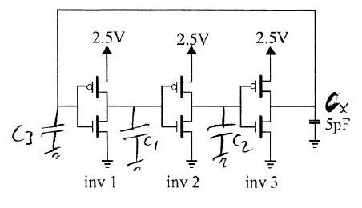
| V_T (V) | k′ (µA/V²) | C_ox (fF/µm²) | V_DSAT (V) | W (µm) | L (µm) | |
|---|---|---|---|---|---|---|
| NMOS | 0,4 | 120 | 6 | 0,6 | 0,5 | 0,25 |
| PMOS | −0,4 | −30 | 6 | −1 | 1,5 | 0,25 |
- I_DSATp = k′_p(W_p/L)[(V_DD − |V_Tp|)|V_DSATp| − V_DSATp²/2] = −30 × 6 × [2,1 × 1 − 0,5] = −288 µA; R_eqp = (3/4)V_DD/|I_DSATp| = 0,75 × 2,5/288 µA = 6,5 kΩ
- I_DSATn = 120 × 2 × [2,1 × 0,6 − 0,18] = 259 µA; R_eqn = 0,75 × 2,5/259 µA = 7,2 kΩ
- C₁ = C₂ = C₃ = W_nLC_ox + W_pLC_ox = 0,75 + 2,25 = 3 fF
- t_p1 = t_p2 = 0,69 C₁ (R_eqp + R_eqn)/2 = 0,69 × 3 fF × 6,85 kΩ = 14,18 ps
- t_p3 = 0,69 (C₃ + C_x)(R_eqp + R_eqn)/2 = 0,69 × 5003 fF × 6,85 kΩ = 23,647 ns
- f_osc = 1/[2(t_p1 + t_p2 + t_p3)] = 1/(2 × 23,675 ns) = 21,12 MHz
Soru 4 (20p): En az transistörlü CMOS
F(A, B, C) = (A′ + B′)(C′ + A′B′) işlevini (değillenmiş girdi yok) en az transistörle tasarlayıp NMOS/PMOS = 1/3 olan inverterle aynı akımı basacak biçimde boyutlandırınız.
F = [AB + C(A + B)]′ = (A′ + B′)C′ + A′B′. PDN: A–B seri ∥ C–(A ∥ B), NMOS'lar 2; PUN dual yapı, PMOS'lar 6.
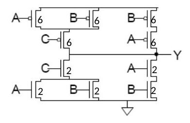
Puanlar: S1 30p, S2a 10p, S2b 15p, S3 25p, S4 20p; süre 100 dakika.